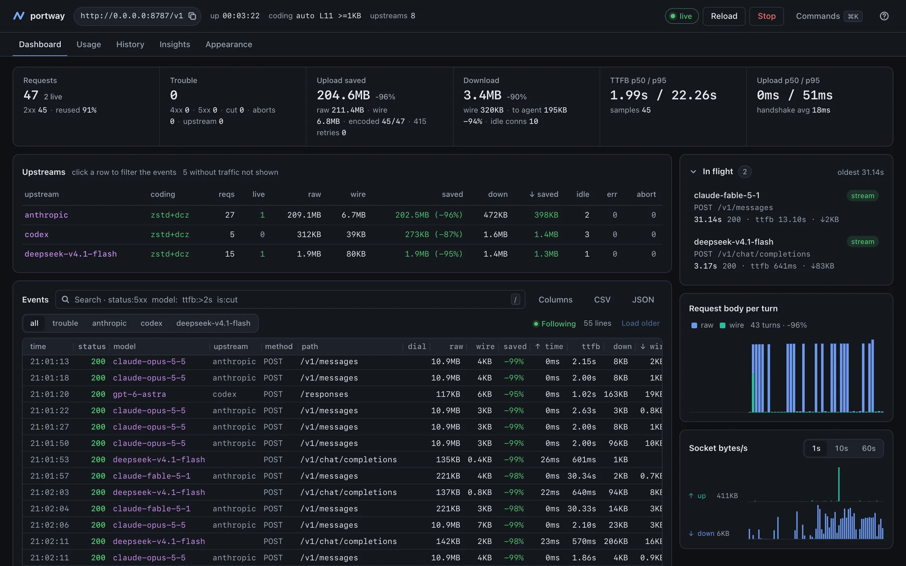
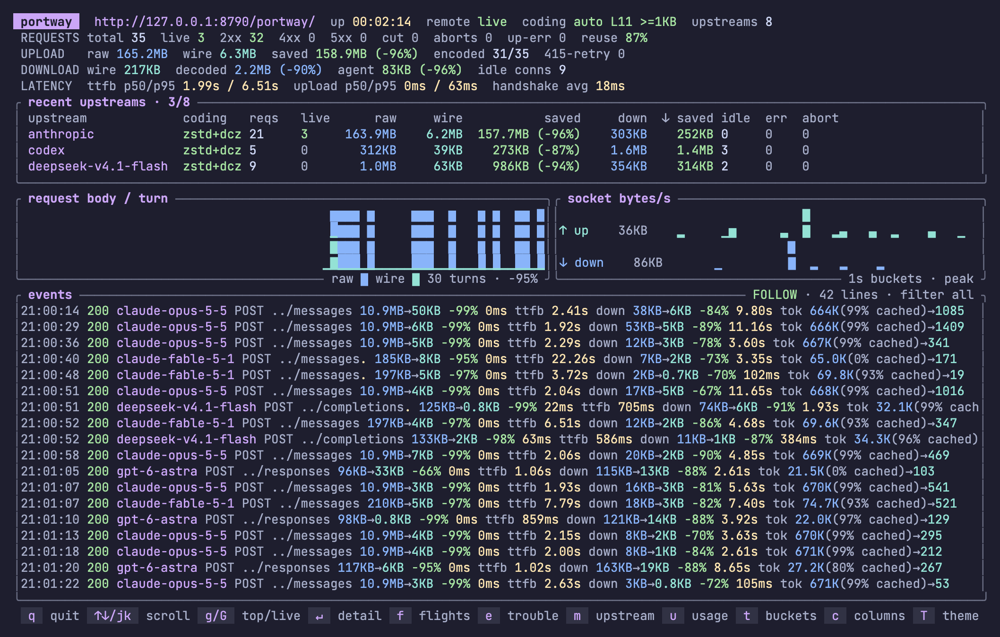

コーディングエージェントの通信量を削減。
Claude Code や Codex などのコーディングエージェントは、ターンごとに長くなる会話を丸ごと送り直します。Portway は直前のリクエストを基に次のリクエストを圧縮し、レシーバーまでの通信量を減らします。レシーバーは元のリクエストを復元してモデルに転送します。
- エージェントが送った量
- 13,877,261 B
- zstd のみ
- 3,114,150 B
- Portway が回線に載せた量
- 101,551 B
40 ターン目：エージェントは 429,900 バイトを送信し、回線を通過したのは 1,029 バイトでした。
バイトが減る様子を、画面で
Portway にはターミナルダッシュボード（portway --tui）とブラウザーコンソール（--web）が付いています。どちらもリクエストが出ていくたびに、エージェントが送ったサイズ、実際に回線を渡ったサイズ、かかった時間とトークン数を表示します。下の画面は実際の Claude Code と Codex のセッションでキャプチャしたものです。


インストールして、エージェントを接続
Homebrew のパッケージにはターミナルダッシュボードとブラウザーコンソールも含まれており、Rust ツールチェーンは不要です。
対話形式で設定するなら、Codex・Claude Code 用の Portway プラグインがクライアントの設定と接続確認を支援します。Homebrew またはリリースバイナリで Portway 0.2.5 以降をインストール、または更新してください。ソースからのビルドは不要です。プラグインが追加するのは setup と doctor のスキルだけで、通信経路は変えません。設定後、Codex は codex -p portway で起動したときだけ Portway を経由します。Claude Code は setup がユーザー設定に書き込むため、新しく開くすべてのセッションが Portway を経由します。
-
Portway をインストールします。macOS Apple シリコンと Linux x86_64 / ARM64（glibc 2.28 以降）に対応しています。
brew install rath/tap/portwayHomebrew を使わない場合は、リリースバイナリをダウンロードするか、ソースからビルドできます。Rust と C ツールチェーンが必要なのはソースからのビルドだけです。
-
API のマウント設定を
portway.tomlに保存します。次にブラウザーコンソールとともに起動します：# portway.toml host = "127.0.0.1" port = 8787 [upstreams] anthropic = "https://api.anthropic.com" codex = "https://chatgpt.com/backend-api/codex"portway --config ./portway.toml --web -
別のターミナルで Claude Code を接続します。 まず Claude Code をインストールし、通常どおりログインします。Portway を起動したまま、次のコマンドで今回の起動に適用します：
env ANTHROPIC_BASE_URL=http://127.0.0.1:8787/anthropic claude -
専用のプロファイルで Codex を接続します。 まず Codex をインストールし、
codex loginで ChatGPT にログインします。次の内容を~/.codex/portway.config.tomlに保存します。CODEX_HOMEを設定している場合は、そのディレクトリに保存します：model_provider = "portway" [model_providers.portway] name = "portway" base_url = "http://127.0.0.1:8787/codex" requires_openai_auth = true wire_api = "responses"次に、プロジェクトのディレクトリで実行します：
codex -p portwayプロファイルは普段のモデルと設定を引き継ぎます。通常のプロバイダーを使うには
codexだけを実行します。両 CLI とも既存の認証情報を使い、Portway 専用の API キーは不要です。どちらのマウント URL にも/v1を付けないでください。 -
最初のリクエストを確認します。 CLI で短いメッセージを送り、応答が返り、Portway のログまたはブラウザーコンソールにリクエストが表示されることを確認します。このプロバイダーへの直接接続ではデルタ圧縮は行われません。すでにリモートの Portway サーバーを使っている場合は、クライアント設定の
127.0.0.1:8787を接続可能なサーバーのアドレスに置き換えてください。 -
デルタ圧縮を使うにはレシーバーを追加します。サービスの手前にあるゲートウェイの後ろで
portway receiveを動かし、センダーをそのゲートウェイに向けます。レシーバーの設定に手順があります。
同じリポジトリには、埋め込み可能な Rust ライブラリ portway-core と、デーモンモード、レポート、ターミナルダッシュボード、ブラウザーコンソールを備えた CLI が入っています。リクエストのメタデータだけを SQLite に記録し、ボディ、認証情報、辞書の中身は決して記録しません。
40 ターン目は、39 ターン目に 4 キロバイトを足したもの
コーディングエージェントはサーバーに状態を持ちません。もう一歩進むために、システムプロンプトとこれまでのすべてのメッセージ、すべてのツール結果をもう一度送り、そのあとに新しく増えた数キロバイトを付け足します。どのリクエストも、直前のリクエストをほとんどそのまま写したものです。
- 1 ターン263,966 B
- 2 ターン268,145 B
- 3 ターン272,556 B
- 20 ターン344,723 B
- 39 ターン425,707 B
- 40 ターン429,900 B
つまりセッションのアップロード量は、長さの二乗に比例して増えていきます。アップロードが待ち時間や費用に直結する環境では、すぐに効いてきます：
- 別リージョンの自前モデルサーバーや、自分で運用するゲートウェイ、
- 1 ターンごとに VPN や SSH を経由するリモート開発マシン、
- 低速・共有・従量制の回線につながったノート PC。
短い単発のリクエストではほとんど得るものがありません。基準にできる先行リクエストがないからです。
直前のターンが辞書になる
Portway は 2 か所で動きます。エージェントの隣のセンダーと、呼び出し先のサービスの手前のレシーバーです。どちらも、最後に合意したリクエストボディを保持します。センダーはそれを基準に次のリクエストを圧縮し、レシーバーはサービスが 1 バイトでも見る前に元に戻します。
- エージェントClaude Code、Codex、base URL を設定できる任意のクライアント
- 268,145 Blocalhost
- portwayセンダー、127.0.0.1:8787
- 1,054 B低速な区間
- portway receive自分で管理するホスト
- 268,145 B同じデータセンター
- サービスモデルサーバー、ゲートウェイ、あるいはプロバイダーの API
両端が基準を揃えるまで
-
1 ターン目が辞書の元になります。zstd で圧縮され、
X-Dict-Store: 1とともに送られます。レシーバーはそれを解いて先へ渡し、ボディを取っておきます。 -
レシーバーは、何を取っておいたかを知らせます。応答には、実際に保存したバイト列の SHA-256 を載せた
X-Dict-Storedが付きます。センダーはそのハッシュが自分の複製と一致したときにだけ、そのボディを基準として使います。 -
2 ターン目は 1 ターン目をハッシュで指定します。DCZ として送られます。辞書の SHA-256 を載せた 40 バイトのヘッダーに続けて、その辞書を基準に圧縮され、内容チェックサムで終わる zstd フレームが並びます。センダーはルートごとに確認済みのボディを最大 8 つ保持し、新しいリクエストと最も長い接頭辞を共有するものを選びます。追記だけの会話では、それが直前のターンです。
0 1 2 3
0 1 2 3 4 5 6 7 8 9 0 1 2 3 4 5 6 7 8 9 0 1 2 3 4 5 6 7 8 9 0 1
+-+-+-+-+-+-+-+-+-+-+-+-+-+-+-+-+-+-+-+-+-+-+-+-+-+-+-+-+-+-+-+-+
| 0x5E | 0x2A | 0x4D | 0x18 |
+-+-+-+-+-+-+-+-+-+-+-+-+-+-+-+-+-+-+-+-+-+-+-+-+-+-+-+-+-+-+-+-+
| 0x20 | 0x00 | 0x00 | 0x00 |
+-+-+-+-+-+-+-+-+-+-+-+-+-+-+-+-+-+-+-+-+-+-+-+-+-+-+-+-+-+-+-+-+
| |
+ SHA-256 of the dictionary, 32 bytes +
| |
+-+-+-+-+-+-+-+-+-+-+-+-+-+-+-+-+-+-+-+-+-+-+-+-+-+-+-+-+-+-+-+-+
| |
+ zstd frame compressed against the dictionary, +
| ending in a content checksum |
+-+-+-+-+-+-+-+-+-+-+-+-+-+-+-+-+-+-+-+-+-+-+-+-+-+-+-+-+-+-+-+-+
基準が消えたときは、一段ずつ降ります
レシーバーが再起動する、古いボディを追い出す、あるいは初めて見るセンダーと出会うことがあります。どれもリクエストを失敗させません。レシーバーは復元できないものを、アプリケーションが動き出す前に拒み、拒否のマーカーを残します。センダーは圧縮を弱めてやり直します。
-
保存されたボディを基準にした DCZ
412（辞書が消えた）、400・415（フレームが拒まれた）なら降ります -
辞書なしの素の zstd
415（エンコーディングが拒まれた）なら降ります - 非圧縮、エージェントが送ったそのまま 常に受け付けられます
リクエストは最大 3 回送られます。Portway が再送するのは、レシーバーのマーカーが付いた拒否だけです。レシーバーはそのマーカーをアプリケーションの応答から取り除くので、アプリケーションが再送を引き起こすことはなく、同じリクエストが 2 度実行されることもありません。アプリケーションのエラーはそのままエージェントへ返ります。
1 ターンのコストは、そのターンが増やした分だけ
同じベンチマークを 4 つのコンテキストサイズで、それぞれ 20 ターンずつ。素の zstd は各リクエストをおよそ 5 分の 1 に縮め、直前のターンの辞書はコンテキストの大きさにかかわらず、およそ 1 キロバイトを残します。
| 1 ターン目のコンテキスト | 非圧縮 | zstd のみ | Portway | 20 ターンでの削減 |
|---|---|---|---|---|
| 128 KiB | 175,405 | 41,962 | 1,104 | 98.5% |
| 256 KiB | 306,503 | 69,608 | 1,058 | 98.7% |
| 512 KiB | 570,438 | 122,089 | 1,034 | 98.8% |
| 1 MiB | 1,094,276 | 222,937 | 1,048 | 98.9% |
最後の列は、辞書の元にするためにコンテキスト全体を運ぶ最初のリクエストを含みます。合成テキストは、素の zstd が Portway 自身のソースに対して発揮するのと同程度の削減率になるよう調整してあります。どの実行もバイト単位で再現でき、復元されたボディは送信時の SHA-256 と照合されます。
cargo build --release --locked
python3 scripts/bench.py --turns 20 --context-kb 1024やらないこと
- 節約するのはバイト数であり、トークンではありません。
- モデルが受け取るリクエストは同じで、課金されるトークンも同じです。プロバイダーのプロンプトキャッシュは繰り返される接頭辞を処理する費用を削り、Portway はそれを送る費用を削ります。両方をお使いください。
- レシーバーが必要です。
- プロトコルに対応していることを通知しない API に直接向けた場合、センダーはリクエストを圧縮せずそのまま転送します。レシーバーは
portway receiveか、このプロトコルを実装した任意のサーバーです。 - 再起動すると忘れます。
- 辞書は両端のメモリにしか存在せず、認証情報ごとに分かれています。既定では 32 KiB 未満のボディが辞書になることはありません。
- 使うのは素の HTTP/1.1 だけです。
- WebSocket も CONNECT も HTTP/2 も受信側 TLS もありません。TLS と認証は手前のゲートウェイに任せてください。リクエストは設定可能な 256 MiB までバッファリングし、応答はストリーミングします。